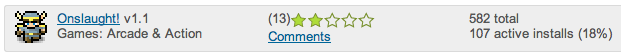

PhoneGap Games in the Android Market
A little while ago I took an existing game called Onslaught! by Lost Decade Games and hacked it to use onscreen controls instead of the keyboard so that it could be enjoyed on mobile phones. This was intended as a proof of concept and not a polished product as I encountered many technical show-stoppers, described in the previous blog post. I've been itching to experiment with PhoneGap apps in the Android Market, so despite obvious issues, I decided to pack up my Onslaught! fork and upload it to the market.
I expected there to be many gameplay issues with varying screen sizes and form factors. I strongly suspected my use of the target-densityDpi would break on non-Nexus One handsets. Indeed, my suspicions were confirmed when, after a nominal $25 fee and a short setup, I uploaded the PhoneGap-created .apk to the Market.
Results
I've never published any application to any application store before. I was surprised to see Onslaught! available in the market within seconds of my submission, with a surge of new users and comments piling in nearly immediately. Apparently the experience is particularly horrible on the Galaxy S and it doesn't work at all on HTC Hero. The day I unleashed Onslaught! unto the Market, I was contacted by someone from Zeemote, who politely suggested that the game "could possibly benefit from the use of a joystick for improved control", and promptly sent me a Zeemote to experiment with. I haven't found the time yet, but thanks Zeemote, that was pretty sweet of you – nobody's ever sent me free stuff before!

Obviously this is a pretty embarrassing state of affairs, and I, like any slightly self respecting developer decided to remove the app from the market to hide the evidence! I also received a very friendly cease-and-desist style letter from the good folks at LDG (this is one of those times when the "ask for forgiveness, not permission" approach has its drawbacks). Needless to say, I gladly pulled the game and apologized profusely to the developers.
PhoneGap
Creating an Android PhoneGap application out of a web application is pretty simple. It's a matter of following a few steps outline on this documentation page. The process varies slightly for each platform and would surely become painful and tedious for developers supporting multiple platforms. Luckily the PhoneGap folks will soon have just the thing to address this issue. PhoneGap Build is a service that promises to package and compile web apps for a variety of platforms. Looking forward to trying it out!